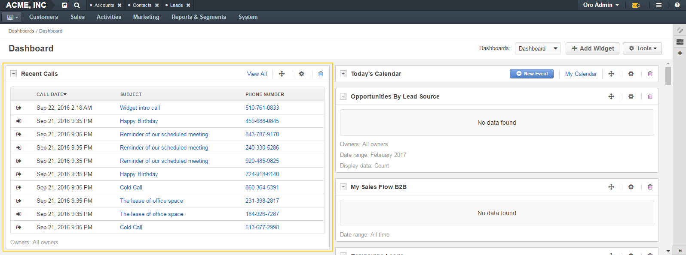

Calls¶
Although not every company employee makes calls very often, calls play one of the most crucial roles in sales and are of significant help to support teams. For those users who make and receive many calls per day or / and communicate with clients by phone, it is convenient to have an instrument that enables them to make records of who they called to and what they discussed. Such instrument is also helpful to managers who can monitor the progress of important tasks and see if all key contacts have received enough attention.
OroCRM and OroCommerce call logging functionality allows users to record who the call was with, which party initiated it, when it was made and what its duration and subject were. A user can also make additional notes regarding the conversation and mention what entity records it dealt with.
Additionally, OroCRM and OroCommerce integration with Google Hangouts enables users to make Hangouts voice or video calls from within OroCRM and OroCommerce, providing an advantage for sales and support teams by enabling them to connect with customers directly. Users can make voice calls to a single phone number, or launch a audio / video conference with up to 5 participants. Call data is logged automatically, including any notes made during the call.
There are three ways to start making or logging a call:
- By clicking the Log Call button in the dedicated system section.
- By clicking the Hangouts call or Log Call icons that appear near the phone fields throughout the system when you hover over them.
- By clicking Log Call action button on the view page of the entity that the call is connected to.

Users can access logged calls in the dedicated system section, in the Activities section of their user page, via the Recent Calls dashboard widget. If an entity record is marked as a context for a call, this call appears in the Activity section on the entity record view page.
For more information about logging calls, see the Calls guide.
For information about whether Hangouts calls are available for you, contact an administrator.
See the following sections for more information: